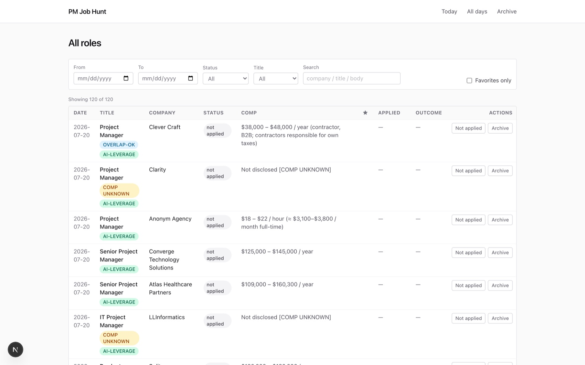
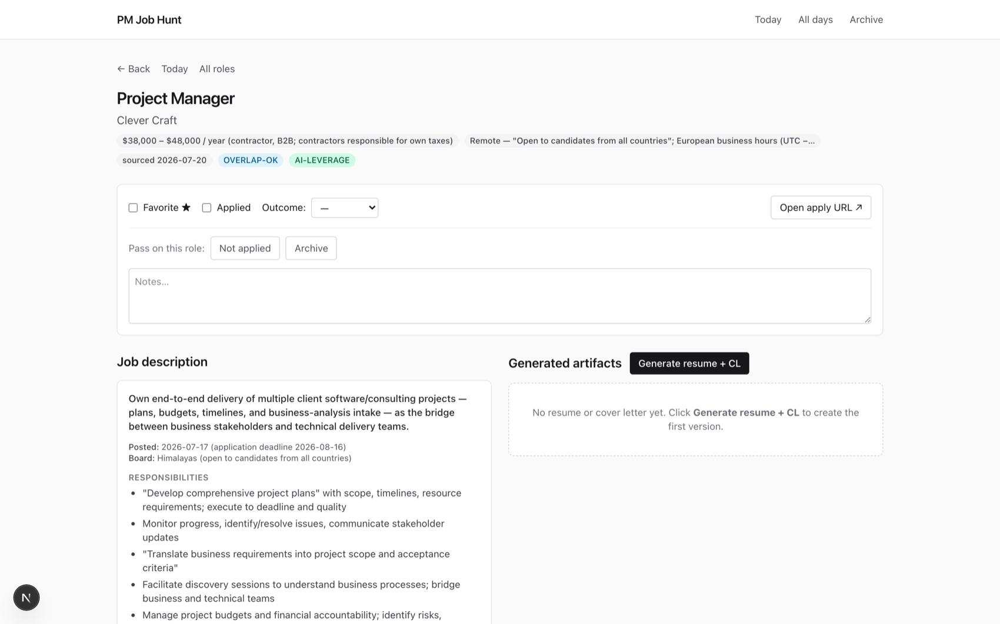
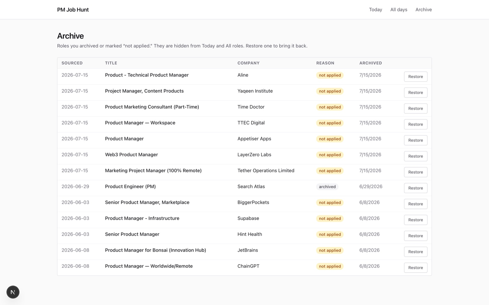

Good applications are slow, so people send generic ones
Each strong application means finding a fresh, genuinely matched remote posting, reading the live job description, rewriting the resume to mirror its language, drafting a tailored cover letter, exporting clean PDFs and logging it all so nothing slips.
Done by hand that is hours every week, and the tedium quietly pushes you toward generic, lower-quality applications.
Discover, score, tailor, generate, export, track
Discover. A "Run now" action spawns a detached research run that scrapes PM listings across boards, including LinkedIn, Wellfound, RemoteOK, We Work Remotely, Remotive, Himalayas, Lever- and Greenhouse-hosted boards and direct career pages, and writes a dated digest of net-new roles. A single-run lock, retries with backoff and a status marker mean a failed run is visible instead of silently vanishing.
Score fit. A locked hunt profile gates every role on title scope, years-of-experience band, remote-only, geographic eligibility and timezone. On compensation it flags rather than drops, tagging roles below-floor, comp-unknown or overlap-ok, so I make the call.
Tailor. When I pick a role, the app re-fetches the live job description, checks the posting is not dead, and falls back to a headless-Chromium render for JavaScript-heavy boards.
Generate, export, track. The tailoring call composes my profile, master resume and a tailor brief into one prompt and returns a structured resume and cover letter. Markdown renders to A4 PDFs through templates matching my resume design, and every role carries status, favourite, applied state, outcome, notes and versioned document history.
Designed to stay truthful
Ask before fabricating
When a job description implies experience my resume only hints at, the app asks me a short list of adjacency questions before finalising, rather than inventing to fill the gap.
Never tailor against a dead posting
A live JD verification layer with deadness detection and a headless-render fallback runs at click time.
Flag, don't drop
Compensation edge cases are tagged for me to judge instead of being filtered out silently.
Local-first by default
No API key or cloud upload. My data stays on disk, and generation shells out to my local Claude Code CLI.
Today, All roles, Role detail, Archive



Click any image to view it full size.
- A daily research runner that produces a deduplicated digest of fresh, profile-matched roles.
- A tailoring engine with a strict output contract and the built-in "ask before fabricating" step.
- Automatic document versioning: each regenerate archives the prior resume and cover letter, plus saved JD audit copies.
- A PDF renderer that matches my resume brand, and a tracking dashboard over an on-disk status store.
Local-first by design
Next.js App Router with React and TypeScript, Zod for input validation, and the local filesystem as the datastore. Generation shells out to my local Claude Code CLI.
Playwright with Chromium, kept out of the app bundle and invoked through small Node scripts, powers both the JavaScript-rendered JD fetch and the HTML-to-PDF rendering. The research run is a detached background process with its own lock, retry and status file.
How I use it
Situation: new roles were posted overnight across a dozen boards.
What happens now: a dated digest of net-new, profile-matched roles is waiting, each tagged for fit and compensation.
Situation: one role is worth a tailored application.
What happens now: one click re-fetches the live posting, asks any adjacency questions, and produces a tailored resume and cover letter as A4 PDFs.
Situation: dozens of applications in flight.
What happens now: every role has status, outcome, notes and the exact document versions sent.
Hours of repetitive work become a few reviewed clicks
The Cockpit automates discovery, fit filtering, tailoring and paperwork, while keeping me in the loop where judgment matters: which roles to pursue and how to answer the questions that keep an application truthful. That frees the time for interview preparation.